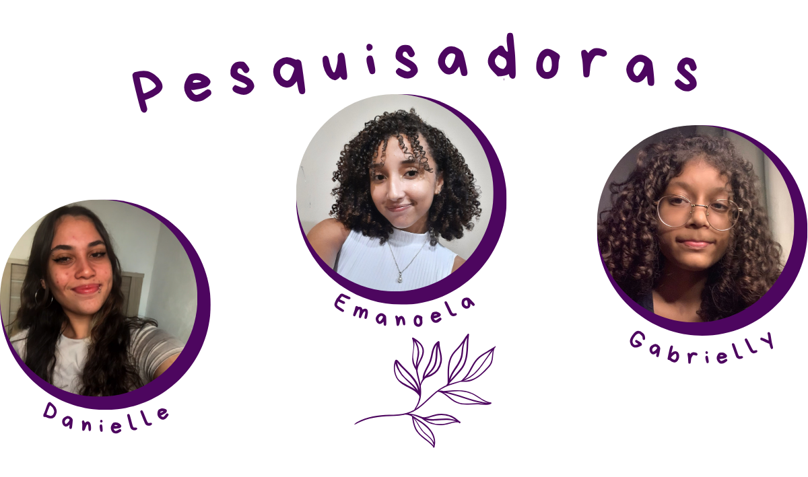

Somos alunas do Instituto Federal de Ciência, Educação e Tecnologia de São Paulo - Campus Guarulhos, cursamos os cursos de Informática (Danielle) e Mecatrônica (Emanoela e Gabrielly). Pensamos o Sistema Olympe for Safe com o intuíto de unir a tecnologia com a mobilidade urbana feminina a fim de construir um ambiente urbano cada vez mais seguro para as mulheres e que elas sejam livres para caminhar por onde quiserem.
Danielle:
Eu pesquiso sobre mobilidade urbana desde
2024 e venho desenvolvendo o aplicativo e o site do Olympe for Safe há 1
ano e meio, ver o projeto tomando forma e até onde ele pode chegar é muito
gratificante, sei que essa pesquisa tem potencial para muito mais e tenho
orgulho de tudo que já produzi com ela e claro, todas as experiências incríveis
que me proporcionou. Acredito que as mulheres devem ocupar seus espaços e esse
projeto reflete muito bem essa ideia. Por mais mulheres na ciência, mais
mulheres na tecnologia e principalmente, livres!
Emanoela:
Estar há um ano no projeto tem mudado muito a
forma como eu enxergo a mobilidade urbana. Passei a perceber com muito mais
clareza as barreiras que as mulheres enfrentam para ocupar a cidade com
liberdade, e como ainda faltam iniciativas focadas nessa realidade.
Participar ativamente da construção do protótipo físico me mostrou,
na prática, como a tecnologia pode ser uma aliada real na nossa segurança
e rotina. É uma honra ver o alcance dessa pesquisa e saber que cada avanço
tem o propósito de tornar os nossos deslocamentos mais seguros e nos peemitir
ocupar ainda mais lugares!
Gabrielly:
Participar do nosso projeto mudou um pouco a
forma como eu enxergo projetos de pesquisa e, principalmente, a forma como
eu enxergo a minha própria rotina. Eu pego ônibus todos os dias e, muitas
vezes, situações que antes pareciam apenas parte do caminho passaram a ter
outro significado depois que comecei a estudar sobre segurança (em especial,
feminina) e mobilidade urbana. É muito diferente pesquisar sobre uma realidade
quando você percebe que também está sujeita a ela. Acho que foi isso que fez o
projeto se tornar tão pessoal para mim: eu não estou apenas estudando um problema
distante, mas pensando em algo que atravessa a minha vida e a de tantas outras
mulheres todos os dias. Poder transformar essa percepção em uma proposta que
busca tornar nosso direito de ir e vir mais seguro me fez entender ainda mais
o propósito de projetos como esse e o quanto a pesquisa pode partir da nossa
própria realidade para tentar transformá-la.